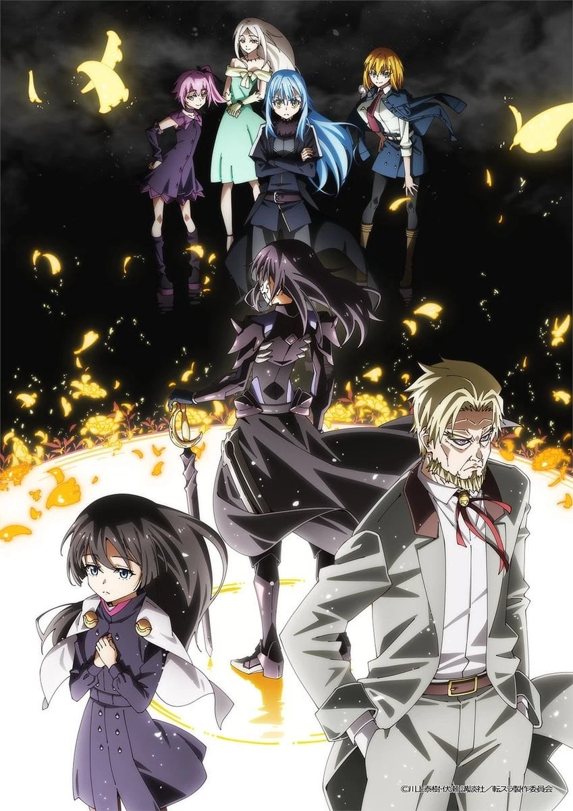

COMPLETE RECORD · Pages 轻量资料
关于我转生变成史莱姆这档事 第四季
転生したらスライムだった件 第4期
别名
- Tensei shitara Slime Datta Ken 4th Season
- That Time I Got Reincarnated as a Slime Season 4
- 形式
- TV
- 首播
- 2026-04-03
- 集数
- 24 集
- 评分
- 6.3
- 评分人数
- 766
SYNOPSIS
简介
举行开国祭，并与各国建立起邦交的魔国联邦「坦派斯特」，朝着实现让人类与魔物一起生活的世界「人魔共荣圈」迈出了步伐。 跨越种族的隔阂携手合作，魔国联邦「坦派斯特」日益繁荣。然而，在这背后，却有些人将魔王利姆路的崛起视为危险讯号。他们就是西尔特罗斯王国五大老之首的前「勇者」格兰贝尔．罗素与其孙女玛莉安贝尔．罗素。主张以支配守护人类的格兰贝尔和玛莉安贝尔布下重重计谋，并与利姆路发生冲突。 另一方面，在黄金乡埃尔德拉，魔王雷昂也基于某种目的展开了行动。身为人类守护者的勇者与支配世界的魔王。在各方谋略的彼此交错之下，某位「勇者」即将苏醒――。 怀抱着无法退让的信念，利姆路的下一场战斗即将开始。
[简介原文] 開国祭を開き、各国と国交を結んだ魔国連邦（テンペスト）は、人と魔物が共に暮らせる世界「人魔共栄圏」の実現に向けて歩みだす。 種族の壁を越え、手を取り合い、繁栄していく魔国連邦（テンペスト）。しかし、その裏で魔王リムルの台頭を危険視する者たちがいた。シルトロッゾ王国五大老の長である元〝勇者〟グランベル・ロッゾとその孫娘、マリアベル・ロッゾ。支配による人類守護を掲げるグランベルとマリアベルは策謀を巡らせ、リムルと激突する。 一方、黄金郷エルドラドでは魔王レオンがある目的のために動き出す。人類の守護者である勇者と、世界を支配する魔王。様々な思惑が交錯する中、ひとりの〝勇者〟が目覚めようとしていた――。 譲れない思いを胸に、リムルの次なる戦いが始まる。
EPISODE LOG
正片章节
已收录 24 条正片章节
- 1崭新的日子 首播：2026-04-03
- 2不断进化的迷宫 首播：2026-04-10
- 3组成假魔体小队 首播：2026-04-17
- 4邀请函 首播：2026-04-24
- 5最初的一步 首播：2026-05-08
- 6西方诸国评议会 首播：2026-05-15
- 7幕后黑手的真面目 首播：2026-05-22
- 8贪婪的布局 首播：2026-05-29
- 9遗迹调查 首播：2026-06-05
- 10贪婪的主人 首播：2026-06-12
- 11蜜莉姆的朋友 首播：2026-06-19
- 12不断进化的魔国联邦 首播：2026-06-26
- 13新的伙伴们 首播：2026-07-03
- 14黑色军团 首播：2026-07-10
- 15不祥的气息 首播：2026-07-17
- 16黎明勇者格兰 首播：2026-07-24
- 17集结之地鲁贝利欧斯 首播：2026-07-31
- 18第18话 首播：2026-08-07
- 19第19话 首播：2026-08-14
- 20第20话 首播：2026-08-21
- 21第21话 首播：2026-08-28
- 22第22话 首播：2026-09-04
- 23第23话 首播：2026-09-11
- 24第24话 首播：2026-09-18